PR： いきなりデート
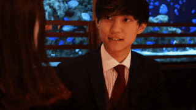
この記事では27歳の一般企業のOLがマッチングアプリで婚活を始めてから絶望し、そこから素敵な人に出会い、結婚するまでの話を綴ったもの。
マッチングアプリを使って結婚に至ったカップルももちろん知ってる。
でもマッチングアプリでの婚活は常にヤリモク男との戦いだった。
安心すればすぐにホテルを案内してくるし、自分の家へのタクシーへ乗せようとしてくる。もうホントに大変...（泣）
一番ショックだったのはこの人とは結婚したいと思った人からこんなLINEが届いたときだ。
本当は公開したくないんだけど、これが実際のメッセージ。
明らかにセフレ認定されてるんだな、、って絶望したのは今でも懐かしい思い出😂
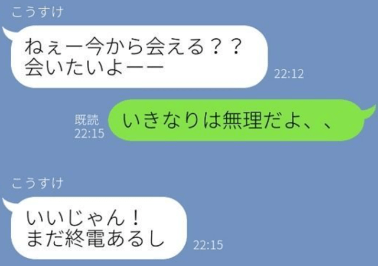
マッチングアプリで気軽に男女が出会うことができるようになった現代において、ステキな結婚相手に巡り合うのはかなりハードル高いし、肉食系男子から常に狙われる身の危険を感じつつ誠実な相手を見分けなければいけない。
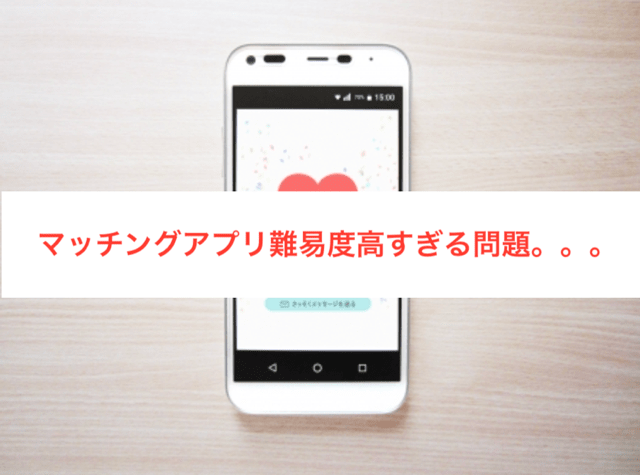
26歳になって周りが結婚し始めた。
一番仲の良かった友達も先日二人の思い出の地でプロポーズされ、来月に予定されている結婚式の招待がポストに投函されていた。
私も長年付き合っていた人はいたし、この人と結婚したいなとは思っていた。
だけど自分の仕事や、彼氏の飲み会や仕事の都合で会えなくなってから、気持ちがすれ違い、結婚が想像できなくなって自分から別れを告げた。
そろそろ私も結婚を意識して動かなければと思ったけど、職場での出会いは無いし、合コンとかもこの歳で1度も行ったこと無いし、友達がオススメしていた大手の会社が出しているマッチングアプリを始めることにした。。
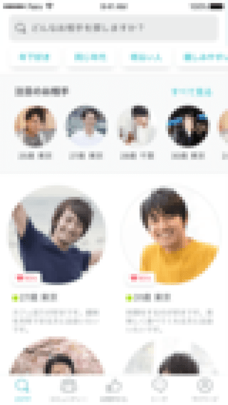
マッチングアプリを始めてから、色々な男性からメッセージが来た。
こうやってちやほやされるのは初めてでちょっと気分がよくなった。
とりあえず年収が高くて、わたし好みの顔の人、複数人とメッセージをやりとやりとりをしていた。
そうこうする内にマッチングアプリを初めて1週間で30代の商社勤務の男性と仕事終わりの金曜日に恵比寿でご飯に行くことになった。
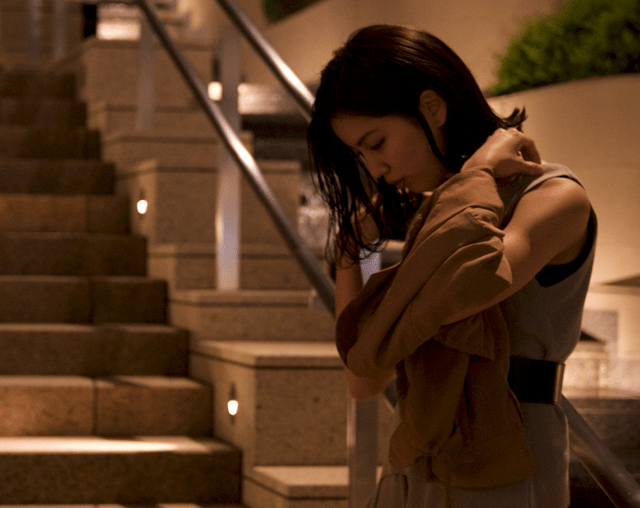
スペックも年収も私が思っていた基準通りのステキな男性だ。
ステキな人だった。
話しも面白いし、スーツが似合う、仕事も頑張ってるまさに「理想的な男性」
お酒も進み、そろそろ終電だと思い帰宅しようとすると。
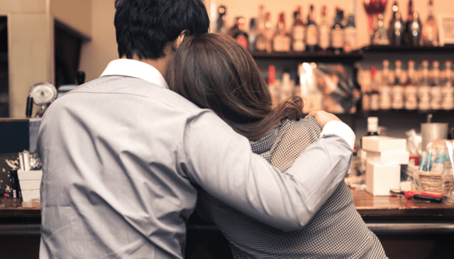
「もう少しだけ一緒にいたいな」と言われあれよあれよとホテルにエスコートされてしまった。
その夜は楽しかったけど、その日から遊び相手と認識されたのかもしれない。
週末になるときまって「今日空いてる？」とLINEが来るようになった。
その後もマッチングアプリを使っていると毎回そんな感じが続いた。
自分がステキだと思う男性に限って毎回ホテルに誘われるし、結婚したい気持ちとは裏腹に「消耗する恋愛」を続けてしまっていた。
自分が理想としている結婚相手にはもう会えないかもしれない。そう思った。
もう結婚なんて諦めたほうがいいかもしれない。。
あれだけ希望を持ってはじめたマッチングアプリには、今だに多くの男性からのメッセージが溜まっていた。
ふと元カレとの写真やLINEのトークをスクロールしていた。
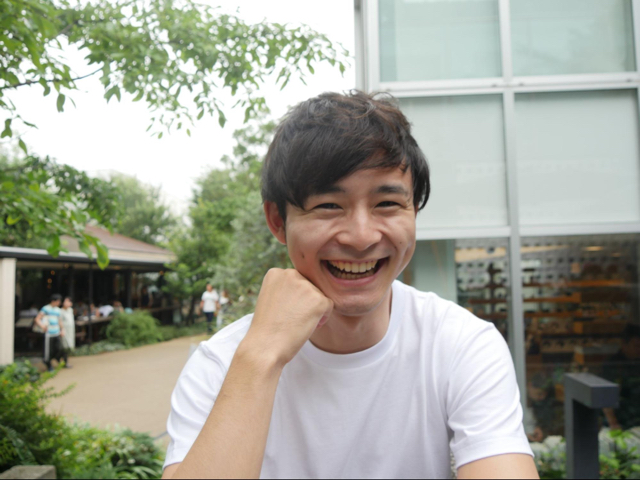
あの時は彼と結婚すると思っていたし、一緒にいて価値観や考え方がとても合っていた。
振り返ると初めて出会ったときに「あ、この人なんかいいかも」って思ってから、デートを重ねてベタに3回目のデートで告白されて付き合うことになった。
そう思った私がたどり着いたのが「デーティングアプリ」だった。
簡単にいうと写真やスペックの条件に合った人とマッチングしたら、まずはお昼に自動予約されたレストランでランチをしてみるというものだ。
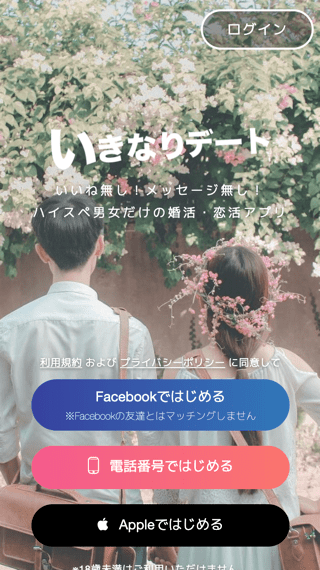
その名の通り、マッチングした人とデートできるサービス。
大手のメディアやテレビ番組でも多く取り上げられてるサービスなの
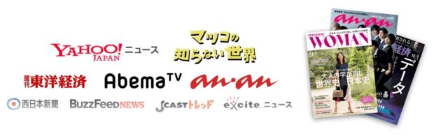
なぜ私がこのサービスで
理想の男性と出会うことができたのか？？
をこれから説明していくね。
とにかく誠実で、価値観の合う人と出会いたいと思っていた私は、このいきなりデートの話を知り合いかから聞いて使ってみることにした。
使い方はすごくカンタンで、
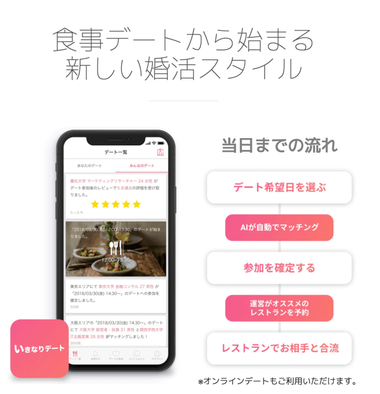
早速上記の手順でデートの予約日程が決まった。
メッセージのやり取りなしにいきなりのデートはこの歳になっても緊張するものだ。
でもこれ以上不毛な恋愛は続けたくなくて、理想の相手をみつけたくて必死だった。
早速予約されたステキなレストランで男性と出会った。結婚への姿勢や考え方がしっかりしていて話していて、自分の婚活を正しく歩んでいる気がした。
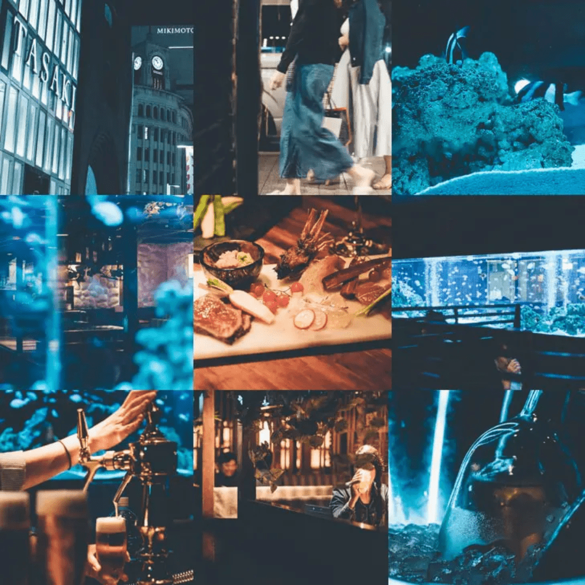
残念ながらその人とはちょっと価値観がずれていたのか、それから会う約束にはならなかった。
3回目のいきなりデート。とてもステキなレストランだった。
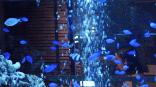
「あ、この人と結婚するんだろうな」と思った。
仕事に対する価値観、将来の考え方、趣味嗜好など、話していて答え合わせをするようにすべてが同じだった。
決して自分がマッチングアプリをやっていた頃に求めていた年収やステータスじゃなかったけど、それがまったく気にならいくらい、ステキで魅力的な男性だった。
私達は付き合って1年半を迎え、少し前にプロポーズを受けた。
今は本当に幸せになりたい人と一緒になることができて心の底から幸せを感じている。
自分にとってステキな人は、世の中が決めた年収や、ステータスなどの尺度では決められないし、決められるはずがない。
だからまずは価値観や考え方を知りたいと思う。その上でお互い幸せを願い合う相手と結婚することができればこれ以上の幸せは無いと思う。
ここまでいきなりデートを皆さんにゴリ押ししてしまったが、もちろん今使っているマッチングアプリと一緒に使ったり、気になるから１回試してみみたりと、使い方は自由だと思う。
ここまで見てくれた皆さんに私目線からのメリットをお伝えすると
その他にも安心できるサービス体制があったりと、たくさんのメリットがあるの。
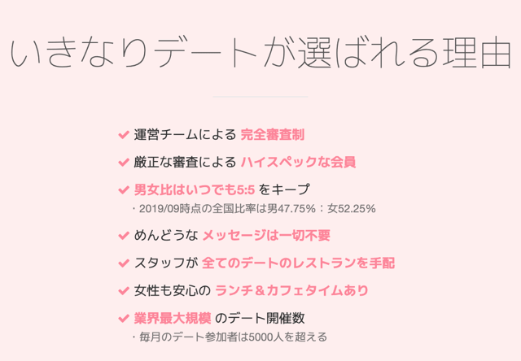
どうかこの記事を見ている女性の皆さんが「いきなりデート」で理想の男性と出会うことができることを祈っています。
※このサービスは18歳以上が対象となります。